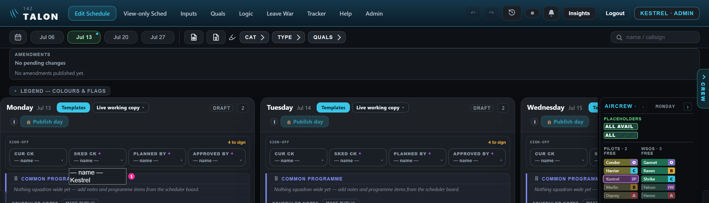
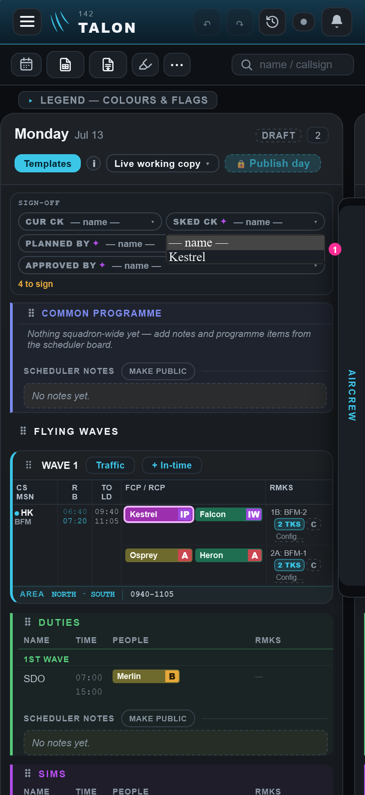
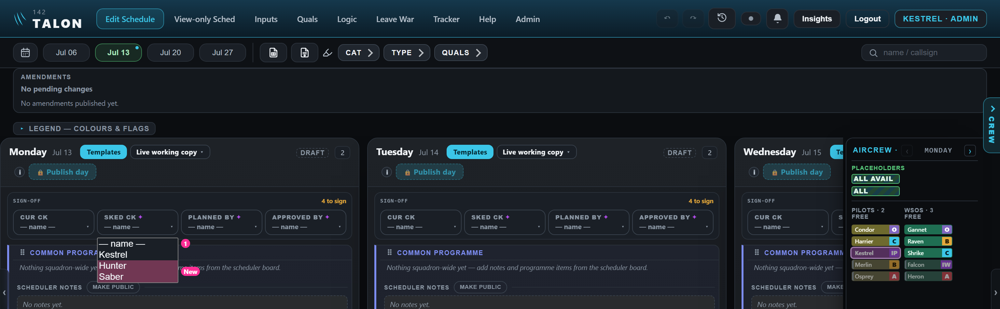
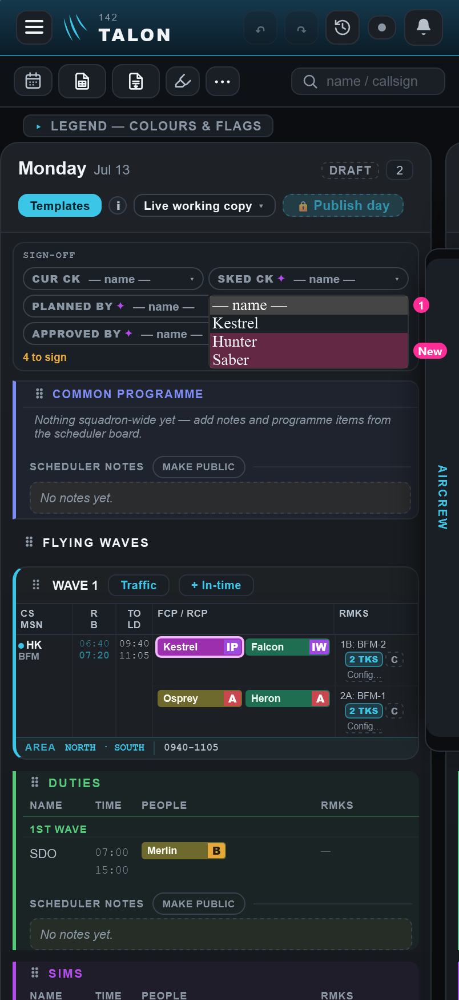
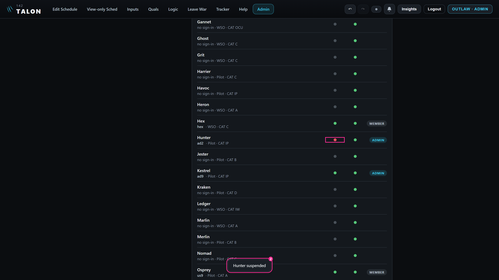
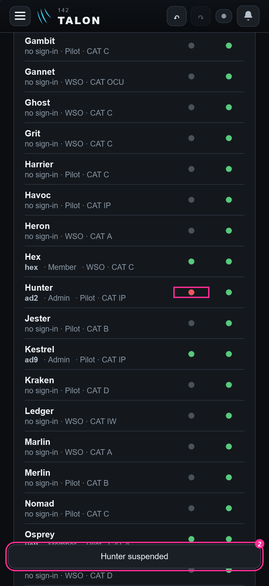
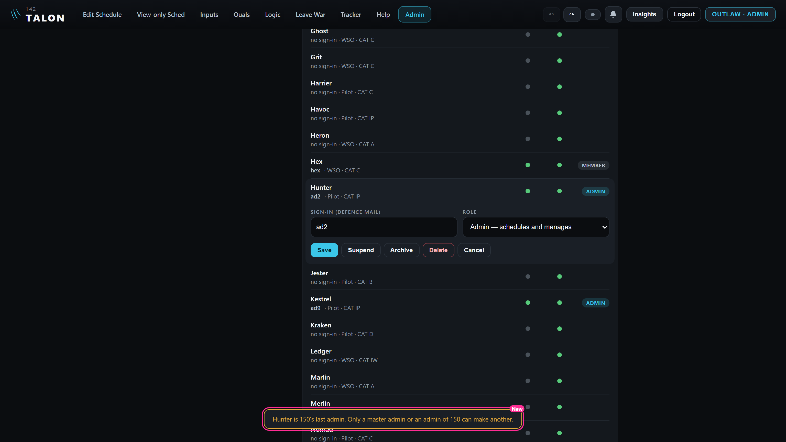
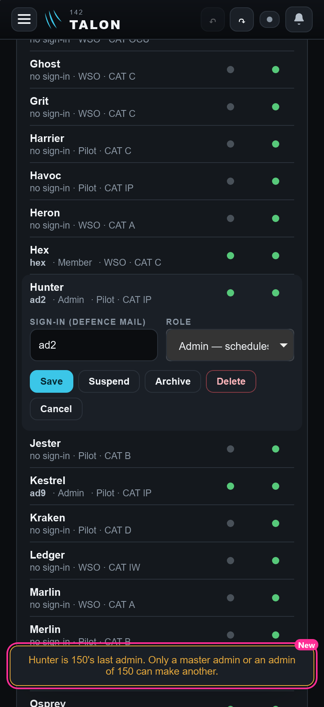
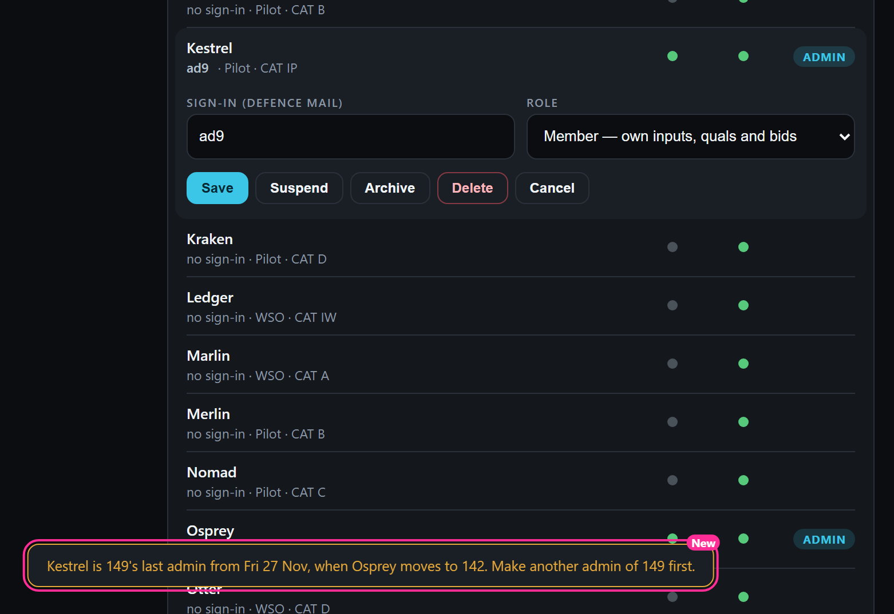
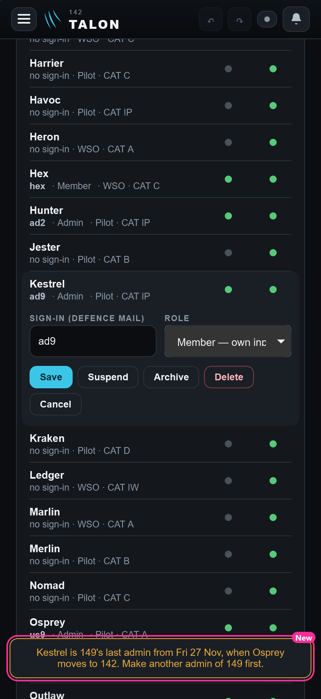

Two readers, checking the fix plan, found two things for you to decide: one where two of your rulings pull against each other, and one change to words you approved. Each picture is the real app; anything drawn in is outlined in pink and tagged New. Tap a picture to see it full size. Big picture: a desktop. Small picture: your iPhone. Nothing here is built yet.
Answer by number. "Both as recommended" is fine. Until you answer, each part is built as its section says.
A correction to last round's page. It said a sign-in with access to another squadron can be moved to another person by a master admin or by an admin of each squadron it has access to. For a sign-in that holds Plan, only a master admin can now do it, because only a master admin gives or takes Plan.
Example. Hunter is 142's admin and holds Plan of 149, so he can plan and publish 149's days. He has the Scheduler tick. He plans and publishes 149's Mon 13 Jul. Today the SKED CK list on that day offers only 149's own schedulers (in the demo, Kestrel alone), so Hunter cannot sign the day he planned. Saber, the master admin, is not offered either (1a).
Recommended: after 149's own people, the list also offers Hunter and Saber (1b). Plan gives Hunter 149's schedule and publishing, and signing is part of publishing. Each is offered only while he has the Scheduler tick, the same rule 149's own people meet. The same goes for PLANNED BY and APPROVED BY. CUR CK, which offers all of the day's own people, stays 149's people only.
Until you answer: the lists offer that day's 149 people only, as you have ruled.




Example. Squadron 150 has no admin of its own. Hunter, 142's admin, runs it through Plan of 150. On Wed 15 Jul Outlaw, another 142 admin who is not a master admin, presses Suspend on Hunter's row on Admin → Users. Today the app lets it through ("Hunter suspended") and 150 is left with nobody who can sign in as its admin (2a). Once the lock you approved is built, the app refuses. But the approved words, "Make another admin of 150 first.", send Outlaw to something he cannot do: only a master admin or an admin of 150 can make an admin of 150.
Recommended: for someone who cannot make an admin of that squadron, the note says who can (2b).
Hunter is 150's last admin. Only a master admin or an admin of 150 can make another.
And when it starts on a later date, for example if 150's other admin, Osprey, were moving to 142 from Fri 27 Nov:
Hunter is 150's last admin from Fri 27 Nov, when Osprey moves to 142. Only a master admin or an admin of 150 can make another.
For a master admin, or an admin of 150, who can make another admin, the words you approved stay: "Hunter is 150's last admin. Make another admin of 150 first." (2c shows them in your approved picture.)
Until you answer: built with the words you approved.





